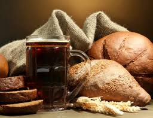

Notre bière est issue d'une réflexion sur le gaspillage d'un des aliments les plus courants : le pain.
Le pain est récolté 10 kms aux alentours de Stuttgart chaque semaine, ce qui représente en moyenne 1 tonne de pain. Ce pain destiné à la poubelle, devient matière première.
Mélangé dans des cuves avec de l'eau et un apport de houblon et de levure, nous brassons notre bière : la BROTBIER. C'est une bière brune de 5°.
Ayant obtenue la médaille d'argent lors du concours de l'OktoberFest de Munich en 2018, nous sommes fiers de notre bière.